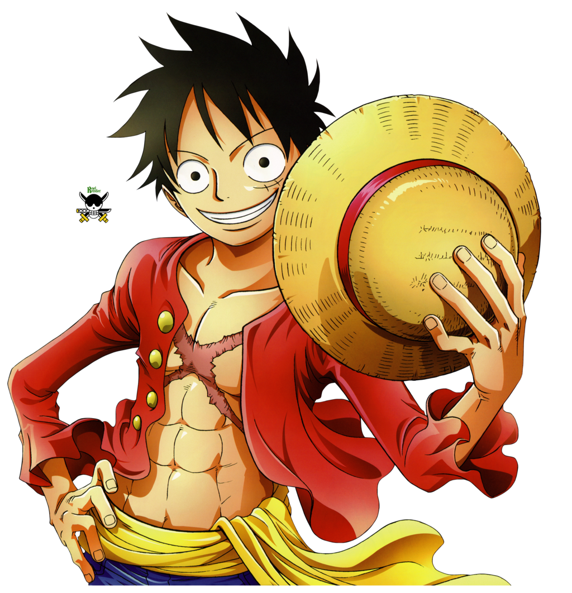

Características Principais:
Nome original: モンキーディールフィ
Nome traduzido: Monkey D. Luffy
Nacionalidade: Brasileiro
Terra-natal: Vila Foosha - East Blue
Idade: 19
Altura: 1,74
Peso: 89 kg
Habilidade: Gomu Gomu no Mi-Homem borracha
Armas usadas: Habilidades com o corpo de borracha
Tripulação: Piratas do chapéu de palha
Monkey D. Luffy
Biografia
Também conhecido como o Chapéu de Palha, Luffy, é um personagem fictício e o protagonista da franquia One Piece criada por Eiichiro Oda. Ele é apresentado como um jovem cujo corpo ganha as propriedades de borracha após ter comido a Gomu-Gomu no Mi, [nota 1] uma das várias frutas amaldiçoadas conhecidas como Akuma no Mi ou Frutas do Diabo. Em busca de seu sonho de ser o Rei dos Piratas, Luffy navega pelo mundo procurando o lendário tesouro One Piece que foi deixado por Gol D. Roger, o antigo Rei dos Piratas. Alegre e aventureiro, Luffy cria seu próprio bando chamado os Piratas do Chapéu de Palha e eles são constantemente antagonizados pela marinha do Governo Mundial. Em batalha, Luffy usa a elasticidade de seu corpo para se esticar e lutar.